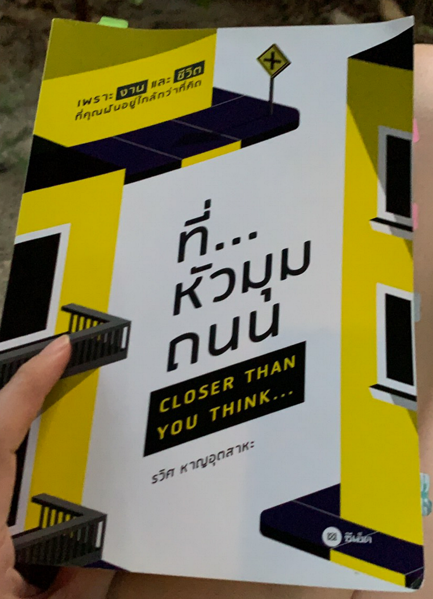

นอนดีมีสุข — มาปรับนาฬิกาชีวิตกันเถอะ
นอนดีมีสุข — มาปรับนาฬิกาชีวิตกันเถอะ
เท่าที่สังเกตุ และที่ได้เม้ามอยกับเพื่อนๆ ที่ทำงานสายไอทีด้วยกัน ส่วนใหญ่จะประสบปัญหาเกี่ยวกับการนอนกันค่ะ ด้วยงานหรืออะไรก็แล้วแต่ ทำให้เพื่อนๆ ชาวไอทีมักจะต้องมีเหตุจำเป็นบ้าง เพลิดเพลินบ้าง ให้ต้องนอนดึก และตื่นสาย เป็นวงจรชีวิตแบบนี้เรื่อยไป
วันนี้กิมจึงอยากจะมาแชร์ประสบการณ์ การปรับนาฬิกาชีวิตของตัวเองค่ะ หลังจากได้อ่านหนังสือ “ที่…หัวมุมถนน” กิมไปโดนใจกับการสร้างวินัยด้วยการวิ่งค่ะ แล้วก็พบผลพลอยได้ระหว่างทาง คือ การหลับเป็นเวลา หลับดี หลับลึก มาเป็นของแถม ถ้าเพื่อนๆ สนใจ ตามมาอ่านกันเลยค่ะ

ต้องขอนอกเรื่องนิดนึงว่า กิมเป็นคนที่นอนยากมากค่ะ เข้านอนสี่ทุ่ม แต่หลับจริงอาจจะเที่ยงคืน ตีหนึ่ง อยู่ร่ำไป แต่มีความจำเป็นต้องตื่นเช้า ในหนึ่งสัปดาห์จะมีวันหรือสองวันที่น๊อคหลับไปตั้งแต่หัวค่ำน้ำท่าไม่ได้อาบ ร่างกายโทรมมากน้อยไปตามสภาพงานที่หนักหนาในแต่ละวัน
ยิ่งถ้าช่วงไหนเครียดมีเรื่องเข้ามาให้คิดเยอะ เจอมาหนัก จะตื่นมากลางดึกค่ะ แล้วก็นอนต่อลำบาก ทำให้วันต่อมาทรุดโทรมมากค่ะ
หลังจากอ่านหนังสือ ก็ทำตามเกือบๆ สองเดือน กิมก็ได้สรุปสิ่งที่ต้องปรับเพื่อให้มีผลกับการนอนที่ดีมี ดังนี้นะคะ
1- ตื่นเช้าเวลาเดิมให้ได้ทุกวัน
ข้อนี้ คือ หัวใจของสมดุลเลยค่ะ ขอให้ปักธงไว้เลยค่ะ ว่าต้องตื่น “hh:mm” เวลาเดิมทุกวัน ไม่ว่าเราจะนอนดึกแค่ไหน แต่เราต้องตื่นเวลาเดิมค่ะ แรกๆ จะเพลียมาก แต่พอทำได้สักสองสัปดาห์ เราจะมีความสุขกับการนอนมาก พอหัวถึงหมอน เหมือนปิดสวิตซ์ ยาววววเลย ไม่ต้องกระสับกระส่าย พลิกตัว วุ่นวาย คิดมากมายอีกต่อไป
2- ออกกำลังกายตอนเช้า
เป็นเรื่องที่ยากนะคะ เวลาเช้าเป็นอะไรที่เร่งรีบไปหมดทุกสิ่งอย่าง แต่เพื่อสุขภาพที่ดี เป็นสิ่งที่เราต้องลงทุนให้กับตัวเองค่ะ เพราะการออกกำลังกายตอนเช้าเราจะได้รับฮอร์โมนดีๆ ไปใช้ตลอดทั้งวันค่ะ สิ่งที่กิมรู้สึกชัดเจนเลยคือ อารมณ์ และพลังบวกค่ะ เราจะมีพลังบวกฟุ้งๆ รอบตัวเรา และเจ้าพลังบวกนี่ก็จะส่งผ่านไปถึงคนรอบตัวเราด้วยนะคะ
ข้อเท็จจริงของการออกกำลังกายตอนเช้า
- ช่วยในเรื่องของการนอนหลับได้ดีกว่าออกกำลังกายตอนเย็น
- คุมน้ำหนักได้ดีกว่า ด้วยเหตุผลในเรื่องของฮอร์โมนที่ร่างกายสร้าง สัมพันธ์กับ biological clock ในสมอง
- อัตราการเต้นของหัวใจจะช้ากว่าออกกำลังกายในช่วงเย็น
อ้างอิงจาก
ออกกำลังกายเวลาไหนดี - Thaihealth.or.th | สำนักงานกองทุนสนับสนุนการสร้างเสริมสุขภาพ (สสส.)คนที่ออกกำลังกายไม่ว่าจะเป็นเวลาใด มีผลการวิจัยยืนยันแล้วว่า สามารถลดความเสี่ยงในการเกิดโรคหัวใจ ความดันโลหิตสูง…www.thaihealth.or.th
ส่วนตัวกิมแนะนำให้วิ่งค่ะ วิ่งทุกเช้าตามระยะที่เหมาะสมกับร่างกายคุณได้เลย ค่อยๆ วิ่งให้ได้ระยะที่ส่งผลกับการนอนค่ะ ยกตัวอย่าง ของกิมถ้าวันไหนวิ่งน้อยวิ่งไม่ถึง 8 กิโลเมตร จะทำให้นอนหลับยากขึ้นเล็กน้อย และอาจมีตื่นกลางดึกอยู่ค่ะ
เริ่มวิ่งและทดลองหาระยะวิ่งที่เหมาะสมของคุณกันค่ะ
3- วางโทรศัพท์ให้ไกลตัวที่สุด
เพื่อไม่ให้เจ้า Smart Phone มารบกวนเวลานอนของเรา วางไว้ให้ไกลจากตัวเราค่ะ การเปิดดูโน่นนี่นั่นก่อนนอนเผลอแพร๊พนึงก็ครึ่งชั่วโมง เผลออีกแพร๊พนึงก็หนึ่งชั่วโมง จะทำให้เราเข้าสู่การนอนได้ช้าลงค่ะ
4- ใช้นาฬิกาปลุก
เพราะเราเอาโทรศัพท์มือถือไปไว้ไกลตัวแล้ว เราจึงต้องมีนาฬิกาปลุกค่ะ (เพราะเรามีธงที่ปักไว้ว่า เราจะตื่นเช้าเวลาเดิมทุกวัน สำคัญมากๆ นะคะ)
จากประสบการณ์ที่กิมได้ลองทั้งหมดด้วยตัวเอง และพบว่าเกิดการเปลี่ยนแปลงที่ดีขึ้นจริงชัดเจนมากค่ะ หวังว่าจะเป็นประโยชน์ได้บ้างกับเพื่อนๆ พี่ๆ น้องๆ ที่ต้องทรมานกับการนอนไม่ดี นอนไม่ได้คุณภาพนะคะ
ถึงตอนนี้อยู่ที่คุณแล้วค่ะ ว่าจะเลือกที่จะเปลี่ยนเพื่อตัวคุณเองไหม
ขอให้ทุกคนมีความสุขกับการนอนหลับลึกค่ะ
อ่านเพิ่มเติมที่นี่ เกี่ยวกับฮอร์โมนที่ได้จากการออกกำลังกาย